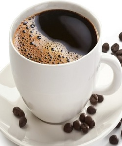

Cafe Americano
¿Por qué se llama así el café americano? El origen de su nombre tiene un pasado en el que se mezcla un conflicto bélico, el desprecio de los italianos y la necesidad de mantenerse despiertos en medio de la guerra. El café americano surgió durante la Segunda Guerra Mundial, entre 1939 y 1945, cuando los soldados estadounidenses se encontraban en territorio italiano. Ellos pensaban que el café expreso era demasiado fuerte para su gusto y tampoco querían beberlo en las tazas pequeñitas que se usan para servir los shots. La razón por qué se llama así al café americano es siempre: el café expreso se diluye en agua caliente para reducir la intensidad de su sabor y sea más suave. También se sirve en una taza de mayor dimensión; los americanos estaban acostumbrados al café de filtro, por lo que ésta era la forma más fácil de hacerlo en medio de la guerra en territorio italiano. La gente en Italia no estaba conforme con que los estadounidenses rebajaran el sabor del café expreso pero lo hicieron por medio de añadir más agua caliente para “los americanos” y así toleraran mejor el sabor, sin tanta cafeína. Con el tiempo, la bebida se popularizó en el resto de Europa y los soldados de Estados Unidos se llevaron la receta a casa y el resto es historia. Hoy en día, el café americano más conocido es el que se prepara por medio de cafetera con filtro, en donde se coloca el café de grano y el agua para obtener la bebida con la concentración justa de café aunque no tan fuerte. Esta preparación cobró mayor popularidad en los años 70. Puede que no sea de tu gusto este tipo de café pero quizá es porque no te lo han preparado como debe ser. Si el agua pasa más tiempo del debido a través del café molido, lo que pasa es que el sabor del café es excesivamente concentrado y amargo. Todo está en los detalles a la hora de preparar un café americano: lo ideal es primero tener listo el café y luego añadir el agua, a la misma temperatura que está la bebida. Y es más, la receta original es beberlo solo, sin leche ni azúcar.
El café americano es una bebida a base de espresso, rebajada con agua caliente. El resultado es una taza de café con mayor cantidad final, un cuerpo más bajo y menor intensidad en relación con el espresso. Es una opción perfecta para disfrutar de una rica taza de café por más tiempo, sin dejar de percibir sus atributos. La receta del café americano tradicional se obtiene agregando agua caliente (90° aprox.) sobre un espresso servido en una taza mediana. En proporciones, podríamos decir que se trata de una taza de 180ml, en la que el espresso ocupa 30 ml aproximadamente, y el resto es completado con agua caliente. De igual manera, uno puede alterar el orden o variar la cantidad de agua a agregar, en búsqueda de un sabor más o menos intenso, teniendo en cuenta el gusto personal de cada uno. En caso de optar por colocar el agua sobre el espresso te dejamos el siguiente tip: al momento de agregar el agua, hacelo de una forma suave, formando un hilo fino. Si vertís el agua de forma muy brusca, es probable que sientas que el café que estás tomando no tiene nada de cuerpo, o que está “aguado”.
Ingredientes: cafe y agua
Preparacion:
- Prepara un espresso en una taza o vaso grande
- Calienta agua en una tetera
- Vierte agua caliente sobre el espresso ya preparado (la cantidad es al gusto)